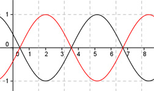

Aufgabe 266 Bestimmen Sie a und c für den dargestellten Graphen der Form y = a * cos b * (x + c) + d.  Abgelesen: Periode = 2п (von 2 bis 8,28)--> 2п |b| = ---- = 1 oder -1 wegen cos(x) = cos(-x) 2п acos(x + c) + d oder acos(x + c) + d Verschiebung von Punkt (0|0) in (2|0) --> Abgelesen: Keine Verschiebung entlang der y-Achse --> d = 0 acos(x + c) oder acos(x + c) Abgelesen: Verschiebung entlang der x-Achse um 2 nach rechts --> c = -2 acos(x - 2) oder acos(-(x - 2)) Abgelesen: |a| = 1 Spiegelung an der x-Achse --> a = -1 --> y = -cos(x - 2) oder y = -cos(-(x - 2)) Zum Vergleich: cos(x - 2)